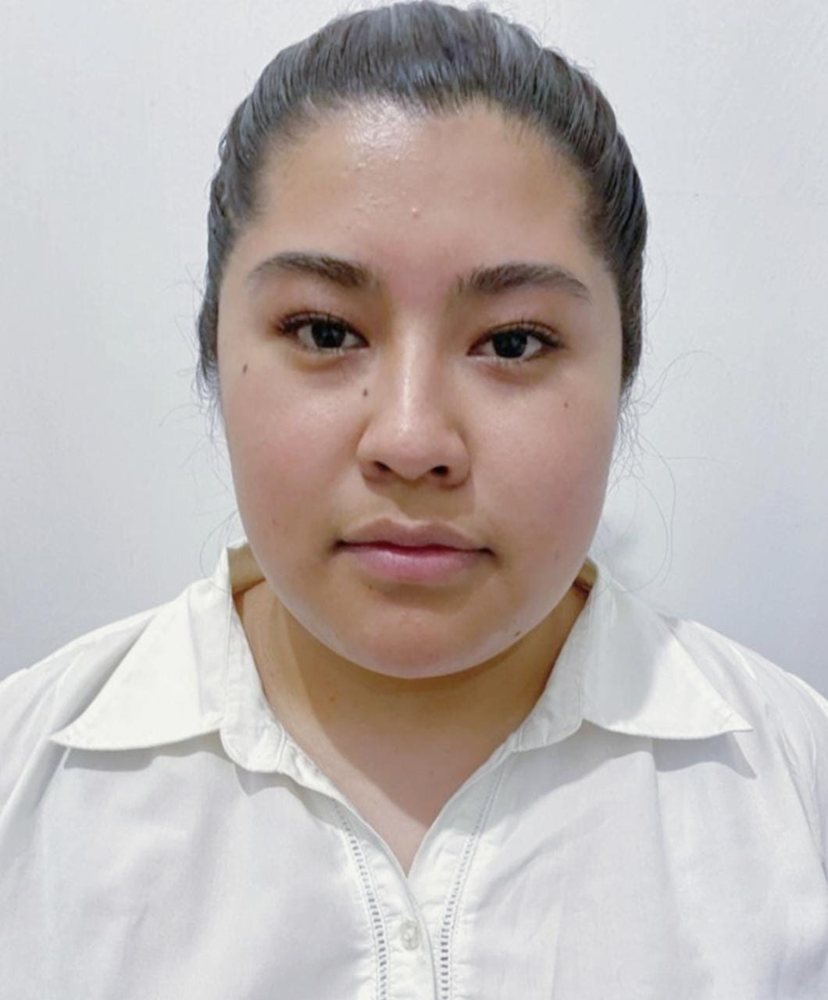

|  | Frida Jiménez Guerrero |
| Dirección: | Seúl, Floor Yangjin Plaza 5F, 5, Hakdong-ro, 5 30-gil, Gangnam-gu, 06104. |
| Correo: | fridajgue@gmail.com |
| Redes sociodigitales: |
|
| Celular: | 5524985201 |
| Estudios: |
|
| Conocimientos técnicos: | Programación web dinámico y web estático. Desarrollo de aplicaciones móviles Android Studio. Base de datos. Lenguaje de programación Java, C y Python. Pintura en acuarela.Creación de contenidos en Genially |
| Trabajos realizados: | Tallerista de escuela de código en Pilares Lomas de la Era y Chamontoya. Publicación de short paper sobre "aplicación móvil para apoyar a detectar el cáncer cervicouterino" |
| Otros intereses: |
|
| Objetivo académico profesional: | Mi objetivo ácademico es concluir la maestría y comenzar en el ambito laboral abriendome camino. Me gustaría convertirme en profesora dentro de la UAM. COntinuar aprendiendo, creando y colaborando en proyectos que puedan ser publicados |
| Comentario final del curso: | En general el curso me prermitio volver a retomar y repasar conocimientos sobre diseño web. Aprendi nuevas cosas, sobre el como diseñar una página de manera correcta y que sea eficaz para el usuario. El error que cometi en algunas clases fue confiar en que tenía y conocía la información y no repasar, al realizar el proyecto me di cuenta que era importante tener frescos los conocimientos para presnetar un buen resultado. |
| Mi nombre es Frida Jiménez Guerrero, nací el día 17 de Julio de 1998 en la Ciudad de México. Actualmente tengo 24 años de edad. Mi familia está conformada por mi papá Fernando Jimenez, mi mamá Patricia Guerrero y mi hermana menor Ximena Jiménez. Estudié la carrera de Tecnologías y Sistemas de Información en la Universidad Autónoma Metropolitana en la unidad Cuajimalpa. Durante mis estudios en la carrera, me interesó el tema de la interacción humano computadora, el desarrollo de aplicaciones móviles y bases de datos. Mis intereses me llevaron a trabajar mi proyecto terminal en desarrollar una aplicación móvil para apoyar a detectar el cáncer cervicouterino, esta aplicación la trabaje en conjunto con mi universidad y con una Doctora perteneciente al Instituto Tecnológico Superior del Oriente del Estado de Hidalgo. Al finalizar mis estudios, obtuve mi primer trabajo en el programa Escuela de codigo del Gobierno de la CDMX. Fui tallerista en los pilares de Lomas de la Era y Chamontoya, enseñando programación a personas que no tenían ningún conocimiento. Mi mayor satisfacción fue ver cómo las personas aprendían y aplicaban sus conocimientos en los proyectos finales que realizábamos y saber que pude realizar bien mi trabajo. Actualmente estoy estudiando la maestría en Diseño, Información y Comunicación (MADIC) en la UAM Cuajimalpa. Me siento muy feliz y tranquila porque es el lugar donde siempre he estado estudiando y tomando clases con profesores que conozco desde mi carrera. Espero continuar aprendiendo y en un futuro tener un trabajo estable donde pueda aplicar todo lo que en MADIC aprenda. |